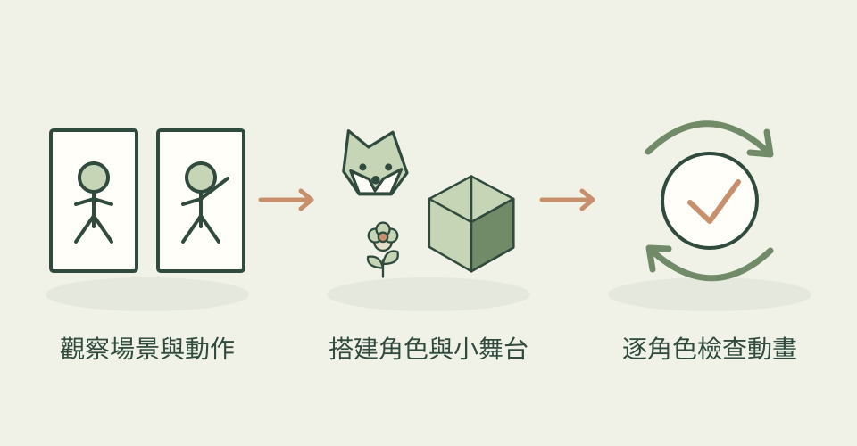

有些故事只需要一座小舞台：泳客跳水、排隊買餐、船隻靠岸。Diorama 讓 agent 用 Three.js 建立切片式場景，鏡頭固定在四分之三角度，搭配像素格線、有限色盤、抖色和輪廓線，呈現玩具般的世界。
它怎麼幫忙
先研究場景與動作，再找能合法使用的素材，安排角色、道具、路徑和先後事件。工具包有水面、水花、尾流、角色關節和動作等模組；每個畫面可固定在指定時間，並以逐角色影格檢查凍結、瞬移、出框或空畫面。這些是作者提供的製作和檢查流程，本次沒有實跑。主圖是作者 README 的泳池動畫。
功能快速理解

研究動作、搭建固定鏡頭的像素風 3D 微縮場景，逐角色檢查循環。
功能示意・本站繪製 放大查看可以這樣開口
這是一個可依需求修改的委託範例。
做一座夜市微縮舞台：攤販煎蛋、客人排隊取餐、外送員騎車離開。用原創角色，固定鏡頭，二十秒循環；在五個時間點檢查每個角色的動作和道具位置，保留可修改的網頁原始檔。
適合什麼工作
適合互動作品集、遊戲概念展示、小型視覺敘事，以及有網頁開發支援、想做場景動畫的美術工作者。
開始之前
- 準備工具
- Node、three、esbuild、playwright-core、Chromium，以及可寫程式並看圖的 agent；部分檢查需 Python，若研究影片可能另用 ffmpeg／yt-dlp。需要能跑 WebGL 的電腦與瀏覽器。
- 使用成本
- 本機 Three.js 製作沒有必需的生圖 API，成本主要是 agent 用量、製作時間與硬體。另選 Meshy／Tripo 生成素材才有相應服務費，並非必要。外部模型、動作與字體須依各自授權使用，不因技能是 MIT 就全部免費。
- 交付內容
- 可修改的 Three.js 場景與動畫程式、瀏覽器展示、檢查影格；錄製影片需依輸出流程處理
- 先留意
- 2026-10-27 首次收錄，專案建立與目前提交都在 10 月 24 日，48 星仍屬小眾候選。像素風由 3D 場景渲染而成，不是逐格手繪精靈圖；也不是可自由轉鏡頭的完整遊戲。作者案例不代表本站實測效果，第三方素材與知名角色權利需另外核對。
作者與來源
本文依作者公開說明整理，沒有實際執行這個專案。功能插圖由本站繪製，原作者範例另行標示；並非本站執行技能的測試結果。GitHub 星數為專案總量，觀察時間為 2026年10月28日 08:29（台北時間）。
與前次快照相比增加 1 星；這不是 GitHub Trending 排名。